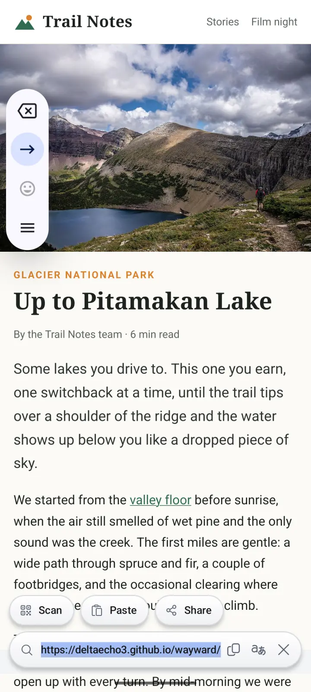
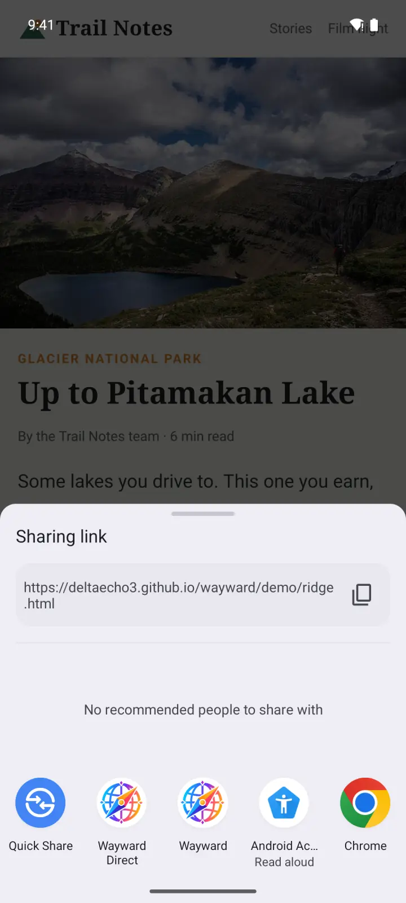

Copy, paste or share a page's address
How-to
Copy a page address to keep it, share it with someone, or paste an address you copied somewhere else to open it.
Copy the address
- Tap the address bar.
- Tap the copy icon in the field (TalkBack: Copy link).
You get a clean link: tracking tags that sites add to addresses (like utm_ and fbclid) are taken off. To copy the address exactly as it is, hold the copy icon instead (TalkBack: Copy full link).
Quicker: hold the address bar without opening it. A small menu offers Copy link, plus Paste and Paste and go when you have something copied.
Paste and go
When something is copied, a Paste button joins the others next to the field. One tap pastes it and goes: it opens a copied address, or searches for copied words.
Holding the address bar does the same with Paste and go. Its Paste puts the text in the field first, so you can change it before you go.
Something you copied in a private tab isn't offered for pasting in a regular tab.

Share the page
- Tap the address bar, then Share next to the field.
- Or open the ⋮ menu and tap the share icon next to the page's title (TalkBack: Share).
Either way the page's clean link goes to Android's share sheet, where you pick the app to send it with.

On a wide screen (a foldable opened up, or the phone on its side), the scan, paste and share buttons sit inside the field as icons, before the copy icon.
More in Browsing
- Search, keep a few tabs open, and find your way home
- Search or go to an address
- Scan a QR code
- Change your search engine, and search one site directly
- Open, find and close tabs
- Pin, rename or pick several tabs
- Group your tabs
- Use the start page
- Find words on a page
- Translate a page
- Read an article without the clutter
- Desktop site, zoom, print and save as PDF
- Hold a link, picture or video for more
- When a page asks you something
- Find a page in your history, or clear it
- Bookmarks, folders, import and export
- Links from other apps, and link previews
- The widget and home-screen shortcuts
- Sign in with your password manager